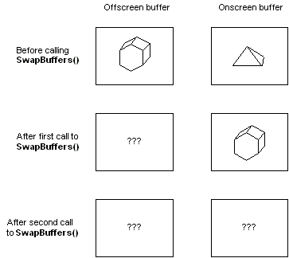

title: Buffer Functions description: To copy the contents of an off-screen buffer to an on-screen buffer, call SwapBuffers. ms.assetid: 605eba4e-ee38-4e62-adf8-1b7894030cb0 keywords:
To copy the contents of an off-screen buffer to an on-screen buffer, call SwapBuffers. The SwapBuffers function takes a handle to a device context. The current pixel format for the specified device context must include a back buffer. By default, the back buffer is off-screen, and the front buffer is on-screen.
[!Note]
The SwapBuffers function does not really swap the contents of the two buffers, but rather copies the contents of one buffer to another. The contents of the off-screen buffer are undefined after a call to SwapBuffers. Thus, the result of two consecutive calls to SwapBuffers is undefined.
Â
The following illustration shows how the contents of the buffers are copied when calling SwapBuffers.

Several OpenGL core functions also manage buffers. The glDrawBuffer function is the one most relevant to double buffering; it specifies the framebuffer or buffers that OpenGL draws into.
The following functions also affect buffers:
Â
Â